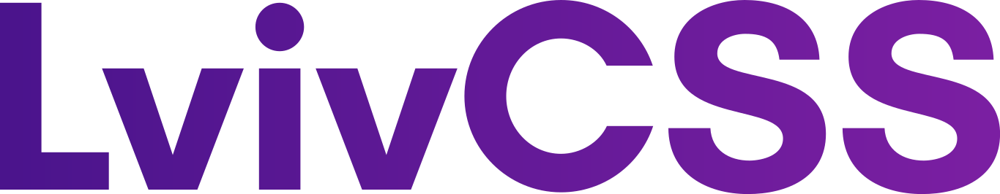

<!doctype html>
<html lang="en">
    <head>
        <meta charset="utf-8">
        <title>Як робити прості речі просто</title>
        <link rel="stylesheet" href="css/reveal.css">
        <link rel="stylesheet" href="css/theme/none.css" id="theme">
         <link rel="stylesheet" href="theme.css" id="theme">
       
        <!-- For syntax highlighting -->
        <link rel="stylesheet" href="lib/css/idea.css">

        

        <!-- If the query includes 'print-pdf', use the PDF print sheet -->
        <script>
          document.write( '<link rel="stylesheet" href="css/print/' + ( window.location.search.match( /print-pdf/gi ) ? 'pdf' : 'paper' ) + '.css" type="text/css" media="print">' );
        </script>

        <style type="text/css">
            @page {    
              margin: 0;
              size: auto; 
            }
        </style>

        <script>
         if(window.location.search.match( /print-pdf-now/gi )) {
           window.print();
         }
      </script>

    </head>
    <body>

        <div class="reveal">
            <div class="slides"><section  data-markdown><script type="text/template"><section data-background="#bf1e2e">
  <div class="flex-center">
    
    
  </div>
</section>
</script></section><section  data-markdown><script type="text/template">
<section data-background-image="assets/me.png"></section>
</script></section><section  data-markdown><script type="text/template">
<div class="imgs-line">
  
  
</div>
</script></section><section  data-markdown><script type="text/template">
<section data-background="#2196F3">
  <h1 class="title">Як навчитися робити прості речі просто</h1>
</section>
</script></section><section ><section data-markdown><script type="text/template">
## Чому ми робимо складно?
</script></section><section data-markdown><script type="text/template">
### Реальні причини
<ul>
  <li class="fragment">Так сказав тімлід</li>
  <li class="fragment">Так написали робити на Medium/Habr/Stackoverflow</li>
  <li class="fragment">На минулому проекті було ОК</li>
</ul>
</script></section><section data-markdown><script type="text/template">
### Загальні причини
<ul>
  <li class="fragment">Ми фокусуємось на процесі, а не результаті</li>
  <li class="fragment">Ми женемось за міфічним <q>ідеальним кодом</q></li>
  <li class="fragment">Ми обожнюємо граблі</li>
</ul>
</script></section></section><section  data-markdown><script type="text/template">
# Граблі
</script></section><section ><section data-markdown><script type="text/template">
## Патерни
<aside class="notes"><p>Які ви патерни знаєте?</p>
</aside></script></section><section data-markdown><script type="text/template">


</script></section><section data-markdown><script type="text/template">
<p>
  <q>Software design patterns are not goals, they are tools</q>
  <small class="author">Matthew Jones</small>
</p>

</script></section><section data-markdown><script type="text/template">
<ul>
  <li>Патерни мають бути засобом покращувати код, а не створювати його</li>
  <li class="fragment">Ви повинні розуміти, чому патерн було примінено в даній ситуації</li>
</ul>

</script></section><section data-markdown><script type="text/template">
<p>
  <q>No matter how ugly a piece of code is, if it works and you don't need to change it, refactoring the code (with a design pattern or any other technique) has a needless cost</q>
  <small class="author">Joel Rodriguez</small>
</p>

</script></section></section><section ><section data-markdown><script type="text/template">
## Фреймворки та інша маячня

</script></section><section data-markdown><script type="text/template">
### №1. Мені не треба винаходити колесо коли я будую велосипед

</script></section><section data-markdown><script type="text/template">
<ul>
  <li>Крім колеса в проекті з'являється двигун внутрішнього згоряння</li>
  <li class="fragment">І пропелери</li>
  <li class="fragment">І гвинт для руху у воді</li>
  <li class="fragment">І рейки. Шпали. Масажист</li>
  <li class="fragment">І CD-програвач. Для зворотньої сумісності</li>
</ul>

</script></section><section data-markdown><script type="text/template">
### №2 А новачкам простіше з фреймворками!
</script></section><section data-markdown><script type="text/template">

<ul>
  <li>АХАХАХА! Тепер я знаю все про Srangular!</li>
  <li class="fragment">Але не знаю, як працює HTTP-запит</li>
  <li class="fragment">Мій наступний проект буде на Y! Oh, shi...</li>
</ul>

</script></section><section data-markdown><script type="text/template">
### №3 Але фронтенд такий складний без фреймворків...
</script></section><section data-markdown><script type="text/template">

НІТ.

</script></section><section data-markdown><script type="text/template">


</script></section></section><section  data-markdown><script type="text/template">
<section data-background-image="assets/terminator.jpg">
  <h3 class="light">Розробка з майбутнього</h3>
</section>
</script></section><section ><section data-markdown><script type="text/template">
<q>А раптом, якщо замовник захоче...</q>
<p>
  <b>
    <span class="fragment">Тупо.</span>
    <span class="fragment">Не.</span>
    <span class="fragment">Ваша.</span>
    <span class="fragment">Проблема.</span>
  </b>
</p>
</script></section><section data-markdown><script type="text/template">
## Філософські камені
</script></section><section data-markdown><script type="text/template">
<p>
  <q>Local state is fine</q>
  <small class="author">Dan Abramov</small>
</p>
<aside class="notes"><p>Redux — один з прикладів, коли в проекті з&#39;являється інструмент для вирішення проблем, які ще не встигли виникнути.</p>
</aside></script></section><section data-markdown><script type="text/template">
<ul>
  <li>Не займайтесь вибором інструментів для неіснуючих задач</li>
  <li class="fragment">Хочеться !== Потрібно</li>
</ul>
</script></section><section data-markdown><script type="text/template">
<q>Бо я знаю тільки Heract!</q> — дуже погана аргументація
</script></section></section><section ><section data-markdown><script type="text/template">
## Складність заради складності
</script></section><section data-markdown><script type="text/template">
<ul>
  <li>Ми забули як верстати. Багато хто взагалі не вміє</li>
  <li class="fragment">Ми обираємо інструменти не з доцільності, а з відомості</li>
  <li class="fragment">Ми обираємо нове лише тому, що воно нове</li>
</ul>
</script></section></section><section ><section data-markdown><script type="text/template">
### Заключення
</script></section><section data-markdown><script type="text/template">
<p>
  Постійне питайте себе:
  <span class="fragment">Н</span><span class="fragment">А</span><span class="fragment">ВІЩО?</span>
</p>
</script></section><section data-markdown><script type="text/template">
Старе — не завжди погане
</script></section><section data-markdown><script type="text/template">
<p>
  Не намагайтеся всі проблеми вирішити одним інструментом.
  Якщо ви не знаєте доречніший засіб, це не причина його не використовувати.
</p>
<p class="fragment">
  Це причина його вивчити.
</p>

</script></section><section data-markdown><script type="text/template">
Робити просто — не соромно.
</script></section></section><section ><section data-markdown><script type="text/template">
## Посилання
</script></section><section data-markdown><script type="text/template">
### Патерни
- [Don’t Use Design Patterns!](https://medium.com/the-coding-matrix/https-medium-com-the-coding-matrix-dont-use-design-patterns-35bcff59dbb5)
- [Software Design Patterns Are Not Goals, They Are Tools](https://exceptionnotfound.net/software-design-patterns-are-not-goals-they-are-tools/)
- [Don’t Get Obsessed With Design Patterns](https://simpleprogrammer.com/dont-get-obsessed-design-patterns/)

</script></section><section data-markdown><script type="text/template">
### Фреймворки

- [Why You Shouldn't Use A Web Framework](https://dev.to/gypsydave5/why-you-shouldnt-use-a-web-framework-3g24)
- [Todo-MVP: Or 'Why You Shouldn't Use A Web Framework' - The Revenge](https://dev.to/gypsydave5/todo-mvp-or-why-you-shouldnt-use-a-web-framework---the-revenge-261l)
- [Stop Using React for EVERYTHING!](https://medium.com/@zackargyle/stop-using-react-for-everything-c8297ac1a644)
- [Software: Managing the Complexity](https://medium.com/@gaperton/software-managing-the-complexity-caff5c4964cf)
- [Frameworks don't make any sense](https://catonmat.net/frameworks-dont-make-sense)
- [“Why We Didn’t Use A Framework” (Case Study)](https://www.smashingmagazine.com/2017/05/why-no-framework/)

</script></section><section data-markdown><script type="text/template">
### Ускладення заради ускладнення

- [You Might Not Need Redux](https://medium.com/@dan_abramov/you-might-not-need-redux-be46360cf367)

</script></section><section data-markdown><script type="text/template">

- [Просто жити: 11 способів припинити все ускладнювати](http://www.tutkatamka.com.ua/nathnennya/zhittya/prosto-zhiti-11-sposobiv-pripiniti-vse-uskladnyuvati/)

</script></section></section><section  data-markdown><script type="text/template">
# Дякую
</script></section><section ><section data-markdown><script type="text/template">
## Моя хвилинка слави
</script></section><section data-markdown><script type="text/template">
<div class="flex-center">
  <h2 class="title-logo">
    <a href="https://www.facebook.com/babichssofficial" target="_blank">Babich Sergiy</a>
  </h2>
  
</div>
</script></section><section data-markdown><script type="text/template">
<div class="flex-center">
  <a href="https://t.me/lvivcss" target="_blank"></a>
  
</div>
</script></section><section data-markdown><script type="text/template">
<div class="flex-center">
  <a href="https://t.me/first_lviv_frontend_chat" target="_blank"><h2>Перша Львівська Фронтярня</h2></a>
  
</div></script></section></section></div>
        </div>

        <script src="lib/js/head.min.js"></script>
        <script src="js/reveal.js"></script>

        <script>
            function extend() {
              var target = {};
              for (var i = 0; i < arguments.length; i++) {
                var source = arguments[i];
                for (var key in source) {
                  if (source.hasOwnProperty(key)) {
                    target[key] = source[key];
                  }
                }
              }
              return target;
            }
            // Optional libraries used to extend on reveal.js
            var deps = [
              { src: 'lib/js/classList.js', condition: function() { return !document.body.classList; } },
              { src: 'plugin/markdown/marked.js', condition: function() { return !!document.querySelector('[data-markdown]'); } },
              { src: 'plugin/markdown/markdown.js', condition: function() { return !!document.querySelector('[data-markdown]'); } },
              { src: 'plugin/highlight/highlight.js', async: true, callback: function() { hljs.initHighlightingOnLoad(); } },
              { src: 'plugin/notes/notes.js', async: true, condition: function() { return !!document.body.classList; } },
              { src: 'plugin/math/math.js', async: true }
            ];
            // default options to init reveal.js
            var defaultOptions = {
              controls: true,
              progress: true,
              history: true,
              center: true,
              transition: 'default',
              dependencies: deps
            };
            // options from URL query string
            var queryOptions = Reveal.getQueryHash() || {};
            var options = {
  "notesSeparator": "note:",
  "separator": "^[\r\n?|\n]---[\r\n?|\n]$",
  "verticalSeparator": "^[\r\n?|\n]--[\r\n?|\n]$",
  "theme": "none",
  "highlightTheme": "idea",
  "controls": true,
  "progress": true,
  "slideNumber": false,
  "history": true,
  "keyboard": true,
  "overview": true,
  "center": true,
  "touch": true,
  "loop": false,
  "rtl": false,
  "shuffle": false,
  "fragments": true,
  "embedded": false,
  "help": true,
  "showNotes": false,
  "autoSlide": 0,
  "autoSlideStoppable": true,
  "mouseWheel": false,
  "hideAddressBar": true,
  "previewLinks": false,
  "transition": "slide",
  "transitionSpeed": "default",
  "backgroundTransition": "default",
  "viewDistance": 3,
  "parallaxBackgroundImage": "",
  "parallaxBackgroundSize": "",
  "parallaxBackgroundHorizontal": null,
  "parallaxBackgroundVertical": null,
  "slideExplorerEnabled": true,
  "browserPath": null,
  "title": "Як навчитися робити прості речі просто",
  "customTheme": "theme",
  "attributes": ""
};
            options = extend(defaultOptions, options, queryOptions);
            Reveal.initialize(options);

        </script>
        
    </body>
</html>